مینا
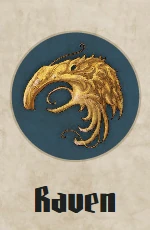
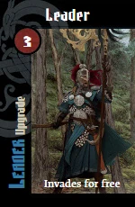
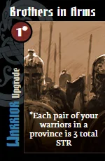
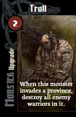
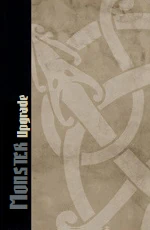
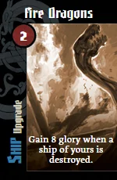
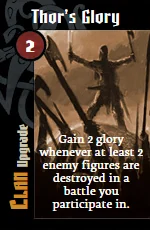
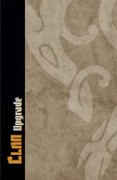
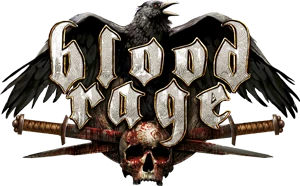
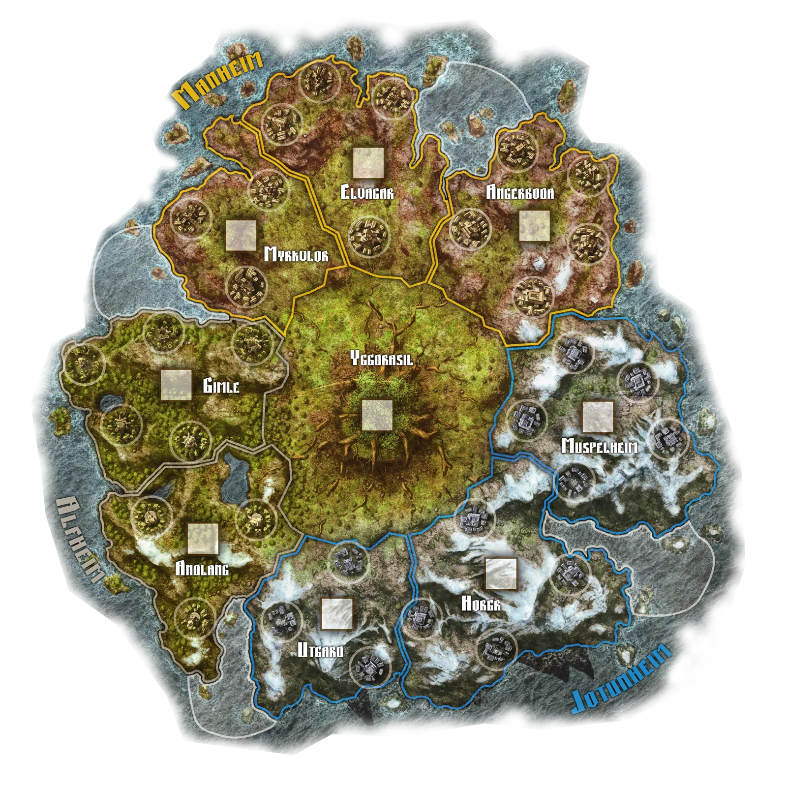
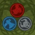
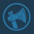
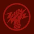
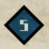
غارت موفق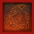
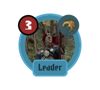
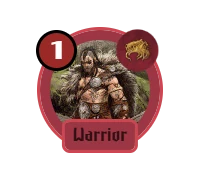
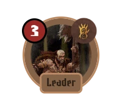
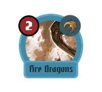
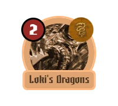
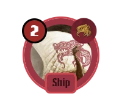
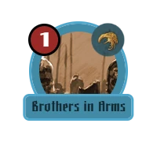
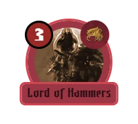
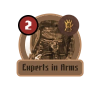
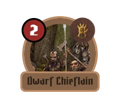
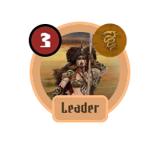
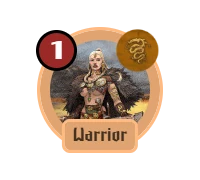
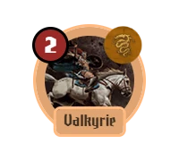
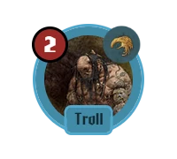








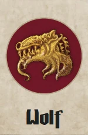
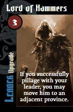
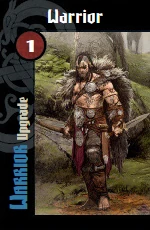
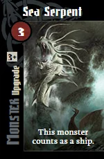
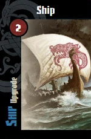
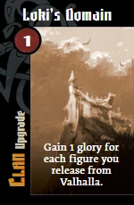
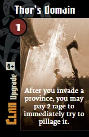
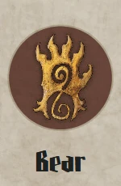
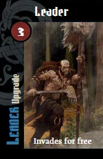
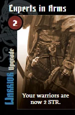
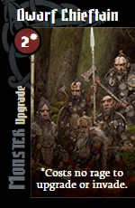
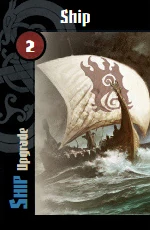
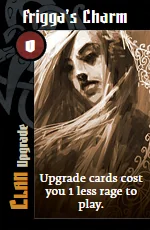
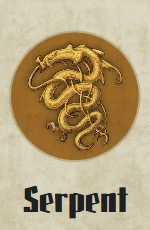
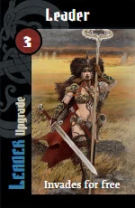
مثل BGA هر اقدام از نوار بالای ستون بازی شروع میشود و دکمهها همان برچسبهای BGA را دارند. «بازی مأموریت/ارتقا/هیولا» فقط وقتی هست که چنین کارتی در دست دارید. فرق ما با BGA: پیش از ارسال «ثبت» و «انصراف» داریم (قانون DS) و یک خط زیر نوار هزینه و اثر را میگوید.
۱ نوبت شما: «یک اقدام انتخاب کنید»
۲ پس از «یورش»: «یورش با …»
۳ پس از انتخاب مهره: هدف روی نقشه
۴ روستا انتخاب شد: ثبت
۵ نوبت دیگری
۶ ارتقا: کارت را از دست بزنید
۷ مأموریت موفق یا پاداش ویژگی
مثل BGA: بالای «دست من» یک بخش «یک کارت نگه دارید» باز میشود (فقط در این فاز). کارت انتخابی به «دست من» میرود و بقیه به نفر سمت چپ؛ ۶ بار، بعد ۲ کارت آخر بینمایش دور ریخته میشود. کارت ذخیره از عصر قبل در دست میماند. همه همزمان؛ منتظرها در پنل خودشان «در حال انتخاب» دارند. ۲ نفره: هر بار ۲ کارت.
مثل BGA: ۱) فراخوان: از چپ غارتگر به ترتیب، نوار «یک مهره برای پیوستن به نبرد انتخاب کنید» با «رد» و «رد برای همه»؛ هدف روی نقشه. ۲) کارت نبرد پنهان از «دست من». ۳) کارتهای «پس از آشکار شدن» (دایرهٔ سفید) از غارتگر به ترتیب. ۴) پنجرهٔ «نبرد در …!» با قدرت هر قبیله در دایرهٔ قرمز و کارتش؛ برابری = همه بازنده. همین پنجره بعداً از دکمهٔ «آخرین نبرد» روی نقشه باز میشود.
مثل BGA: دور ریختن با نوار وضعیت و «دست من»؛ نتیجهٔ مأموریتها و راگناروک در پنجره (برای همه همزمان)؛ انتخاب ویژگی پس از مأموریت موفق با دکمههای خشم/تبر/شاخ در نوار. آزادی از والهالا فقط در گزارش و شمارندهٔ «والهالا» دیده میشود.
| مینا | کشتی | +۱۱ با اژدهاهای آتش +۸ |
| آرش | جنگجو | +۳ |
| سارا | والکیری | +۳ |
۳ افتخار برای هر مهرهٔ نابودشده؛ نشان نابودی به گیمله میرود.
نشانهای غارت برمیگردند، بازیکن اول به آرش میرسد و عصر ۳ با هدایای خدایان شروع میشود.
پس از آزادی از والهالای عصر ۳ بازی تمام است. فقط در پایان بازی هر ویژگی که به پلهٔ ۴ یا ۵ رسیده +۱۰ و پلهٔ آخر +۲۰ افتخار میدهد. فتح تور (۳ افتخار برای هر مهرهٔ روی نقشه) هم اینجا حساب میشود. بیشترین افتخار برنده است؛ قانون برابری در کتاب نیست، پس رتبهٔ مشترک میدهیم (ENGINE.md §۷).
| رتبه | بازیکن | افتخار بازی | خشم | تبر | شاخ | کارتهای پایانی | جمع |
|---|---|---|---|---|---|---|---|
| ۱ | نیلوفر، گرگ | ۱۱۸ | ۸ | ۸ +۲۰ | ۷ +۱۰ | — | ۱۴۸ |
| ۲ | سارا، مار | ۹۷ | ۷ | ۶ +۱۰ | ۱۰ +۲۰ | — | ۱۲۷ |
| ۳ | مینا، کلاغ | ۱۰۴ | ۱۲ +۱۰ | ۵ | ۷ +۱۰ | — | ۱۲۴ |
| ۴ | آرش، خرس | ۸۸ | ۱۲ +۲۰ | ۴ | ۶ | فتح تور +۱۵ | ۱۲۳ |
نیلوفر با ۱۴۸ افتخار برنده شد. صفحهٔ نتیجهٔ میز (DS: Table-Result) همین جدول را با رتبهها نشان میدهد؛ publicSummary امتیاز نهایی را میفرستد.
پلهٔ ویژگی با رنگ قبیله روی «آمار قبیله» دیده میشود؛ پلههای افسانهای (۴ به بالا) در پنل بازیکن قاب طلایی دارند.
همه با DS Dialog: عنوان، محتوا، «بستن». باز میشوند از: نشان عصر روی نقشه (مسیر عصرها)، «جزئیات آمار» در پنل بازیکن (فقط همان بازیکن)، «ذخیره» و «مأموریتها» روی صفحهٔ قبیله، «والهالا» و کارتهای دورریخته پایین نقشه. راهنمای کارت با hover یا نگهداشتن.
نشان قبیلهٔ همین بازیکن روی پلهٔ فعلی هر ویژگی (BGA). دو خانهٔ آخر هر ردیف در دادهٔ BGA یکیاند (COMPONENTS.md §۱۸).
مانهایم! (۷ افتخار)
در یکی از استانهای مانهایم (زرد) بیشترین قدرت را داشته باشید. اگر انجام شود، یکی از ویژگیهای قبیله یک پله بالا میرود.
اکنون انجامشده: آنگربودا
برای بقیهٔ بازیکنها فقط پشت کارت و تعداد.
پس از یورش به یک استان، میتوانید ۲ خشم بدهید و بیدرنگ آن را غارت کنید.
After you invade a province, you may pay 2 rage to immediately try to pillage it.